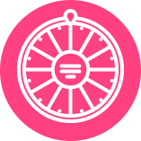

<ion-header>
  <ion-toolbar color="darkorange">
    <ion-buttons slot="start">
      <ion-menu-button></ion-menu-button>
    </ion-buttons>
    <ion-title>詹惟中紫微斗數</ion-title>
    <ion-buttons slot="end">
      <ion-button (click)="presentPopover()">
        <ion-icon slot="icon-only" name="settings"></ion-icon>
      </ion-button>
    </ion-buttons>
  </ion-toolbar>
</ion-header>

<ion-content>
  <ion-grid class="ion-no-padding">
    <ion-row>
      <ion-col size-md="8" offset-md="2" text-center class="ion-no-padding">
        <ion-img src="../../assets/images/banner.jpg"></ion-img>
        <!--  -->
      </ion-col>
    </ion-row>
    <ion-row>
      <ion-col id="info" size-md="8" offset-md="2">
        <!-- <form #f="ngForm" (ngSubmit)="onSubmit(f)"> -->
            <form #f="ngForm" (ngSubmit)="onMySubmit(f)">
          <ion-card class="ion-no-margin">
            <ion-card-header>
              <ion-card-title>了解您的紫微命盤</ion-card-title>
            </ion-card-header>
            <ion-card-content>
              <ion-item>
                <ion-label position="stacked">您的姓名<ion-text color="danger">*</ion-text>
                </ion-label>
                <ion-input type="text" ngModel name="username" required #unameCtrl="ngModel"></ion-input>
              </ion-item>
              <!-- <ion-item *ngIf="!unameCtrl.valid && unameCtrl.touched" lines="none">
                    請填入姓名
                  </ion-item> -->

              <ion-item>
                <ion-label position="stacked">出生日期 <ion-text color="danger">*</ion-text>
                </ion-label>
                <ion-datetime displayFormat="YYYY-MM-DD" placeholder="" ngModel name="birthday" required></ion-datetime>
              </ion-item>

              <ion-item>
                <ion-label position="stacked">出生時間 <ion-text color="danger">*</ion-text>
                </ion-label>
                <ion-select ngModel name="birthdaytime" required>
                  <ion-select-option value="0">00:00~00:59</ion-select-option>
                  <ion-select-option value="1">01:00~02:59</ion-select-option>
                  <ion-select-option value="2">03:00~04:59</ion-select-option>
                  <ion-select-option value="3">05:00~06:59</ion-select-option>
                  <ion-select-option value="4">07:00~08:59</ion-select-option>
                  <ion-select-option value="5">09:00~10:59</ion-select-option>
                  <ion-select-option value="6">11:00~12:59</ion-select-option>
                  <ion-select-option value="7">13:00~14:59</ion-select-option>
                  <ion-select-option value="8">15:00~16:59</ion-select-option>
                  <ion-select-option value="9">17:00~18:59</ion-select-option>
                  <ion-select-option value="10">19:00~20:59</ion-select-option>
                  <ion-select-option value="11">21:00~22:59</ion-select-option>
                  <ion-select-option value="12">23:00~23:59</ion-select-option>
                </ion-select>
              </ion-item>

              <ion-item>
                <ion-label position="stacked">手機號碼 <ion-text color="danger">*</ion-text>
                </ion-label>
                <ion-input type="tel" ngModel name="cellphone" required></ion-input>
              </ion-item>
              <div class="ion-margin-top">
                <ion-button type="submit" color="primary" expand="full" [disabled]="!f.valid">立即了解你的紫微命盤 免費</ion-button>
              </div>
            </ion-card-content>
          </ion-card>
        </form>
      </ion-col>
    </ion-row>

    <ion-row class="ion-text-center ion-margin-top">
      <ion-col size-sm="4" size-md="2" offset-md="3">
        <!-- <a [routerLink]="['/','home','tabs','nine']" routerDirection="forward">
          <ion-img src="../../assets/images/wheel_of_life.png"></ion-img>
        </a> -->
        <a [routerLink]="['/','astrology']" routerDirection="forward">
          <ion-img src="../../assets/images/wheel_of_life.png"></ion-img>
        </a>
        <!--  -->
        <div class="ion-margin">我的命盤</div>
      </ion-col>
      <ion-col size-sm="4" size-md="2">
        <a [routerLink]="['/','life']">
          <ion-img src="../../assets/images/whole_life.png"></ion-img>
          <!--  -->
        </a>
        <div class="ion-margin">一生機運</div>
      </ion-col>
      <ion-col size-sm="4" size-md="2">
        <a [routerLink]="['/','year']">
          <ion-img src="../../assets/images/year_fortune.png"></ion-img>
          <!--  -->
        </a>
        <div class="ion-margin">2020流年運勢</div>
      </ion-col>
    </ion-row>

    <ion-row class="ion-text-center">
      <ion-col size-sm="4" size-md="2" offset-md="3">
        <a [routerLink]="['/','zhan']">
          <ion-img src="../../assets/images/videos.png"></ion-img>
          <!--  -->
        </a>
        <div class="ion-margin">詹老師的話</div>
      </ion-col>
      <ion-col size-sm="4" size-md="2">
          <ion-img src="../../assets/images/record.png"></ion-img>
        <div class="ion-margin">測算紀錄</div>
      </ion-col>
      <ion-col size-sm="4" size-md="2">
          <ion-img src="../../assets/images/customer_service.png"></ion-img>
        <div class="ion-margin">客服</div>
      </ion-col>
    </ion-row>

  </ion-grid>
</ion-content>